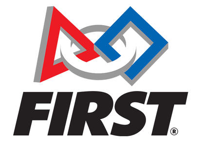

4255
RoboDores
RoboDores
Team 4255, Robodores, is an FRC (FIRST Robotics Competition) robotics team based in Monterey High School in Monterey, California. Each year, our student-led team successfully designs, builds, and programs a robot to compete in FIRST competitions around the state of California and beyond. Founded in 2011, our team has steadily grown to include 15 participating students and our mentors. Committed to spreading FIRST in our community, we’ve sponsored 4+ local FIRST teams, and work with Seaside High School to organize the annual Monterey Bay Regional competition, attended by over 30 FRC teams, near and far. We’ve made it a priority to provide participating students with hands-on experiences, mentorship from STEM professionals, and the tools and equipment needed to build impressive robots safely and efficiently.
Our mission is to inspire students of all ages to take part in STEM education, and to raise public awareness of FIRST and what it does for the students who participate in it.
Founded by inventor Dean Kamen in 1989, FIRST (For Inspiration and Recognition of Science and Technology) seeks to “inspire young people to be science and technology leaders and innovators, by engaging them in exciting mentor-based programs that build science, engineering, and technology skills, that inspire innovation, and that foster well-rounded life capabilities including self-confidence, communication, and leadership.” FIRST participation is proven to encourage students to pursue education and careers in STEM-related fields, inspire them to become leaders and innovators, and enhance their 21st century work-life skills. For more information on FIRST, visit their official website. Since its inception, the FIRST organization has expanded to consist of four international robotics programs: 